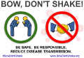

BOW, DON'T SHAKE!

BE SAFE. BE
RESPONSIBLE.
REDUCE DISEASE TRANSMISSION.
#BowDontShake
Why bow?
The handshake adds a needless and dangerous vector for disease
transmission, not only for Coronovirus (COVID19). With your
help we can change this cultural practice to a safer,
healthier alternative -- not only during the COVID-19
pandemic, but permanently in all healthcare settings. A
brief, slight bow is already understood throughout the world
as a friendly respectful greeting. See also how bowing
compares with other handshake
alternatives.
Posters -- print and post!
All of the following graphcs are
CC0 licensed for free unlimited use.
Posters and other printables

|
PDF, in inches: 11x8.5 17x11 24x18 36x24 |
 |
PDF, in inches: 8.5x11 Not yet available: 11x17 18x24 24x36 |
 |
PDF, in inches: 11x8.5 17x11 24x18 36x24 |
 |
PDF, in inches: 8.5x11 Not yet available: 11x17 18x24 24x36 |
Other graphics
|  | With website URL, good for email and
general use, PNG, sizes in pixels: 754x520
600x414
500x345 400x276 |
| |
Screen saver, PNG 1600x900 pixels: yellow or white |
| |
Green circle bow, PNG, sizes in pixels: 341x335 |
| |
Graphic only, PNG, sizes in pixels 811x359
|
{kind=link}
{kind=link}
{kind=link}
{kind=link}
{kind=link}
{kind=link}
{kind=link}
{kind=link}
About
This site was created by David Booth and Rafael Richards:
- David Booth, PhD, is a computer scientist and
software architect working on healthcare and biomedical
data, with a focus on improving data interoperability.
- Rafael Richards, MD, MS, is an anesthesiologist at
the US Department of Veterans Affairs, with an additional MS
degree in applied mathematics.
All opinions are those of the author(s) and do not
necessarily reflect those of their employer(s).
The "Bow, don't shake" slogan was coined several years ago by David Booth, after observing how nonsensical it was that healthcare workers were shaking hands both with each other and with patients. This site was finally created at the beginning of the COVID-19 pandemic, when we realized that the message would finally resonate among the public. The purpose of the message is to permanently eliminate the practice of shaking hands in all healthcare environments.
This website is maintained
on github. If you would like to contribute,
contact pr@BowDontShake.org
or clone the github site and issue a pull request. All
contributed content must be public domain or licensed for free
unlimited use, such as a
CC0 license.
Questions or suggestions? Contact pr@BowDontShake.org .
v64